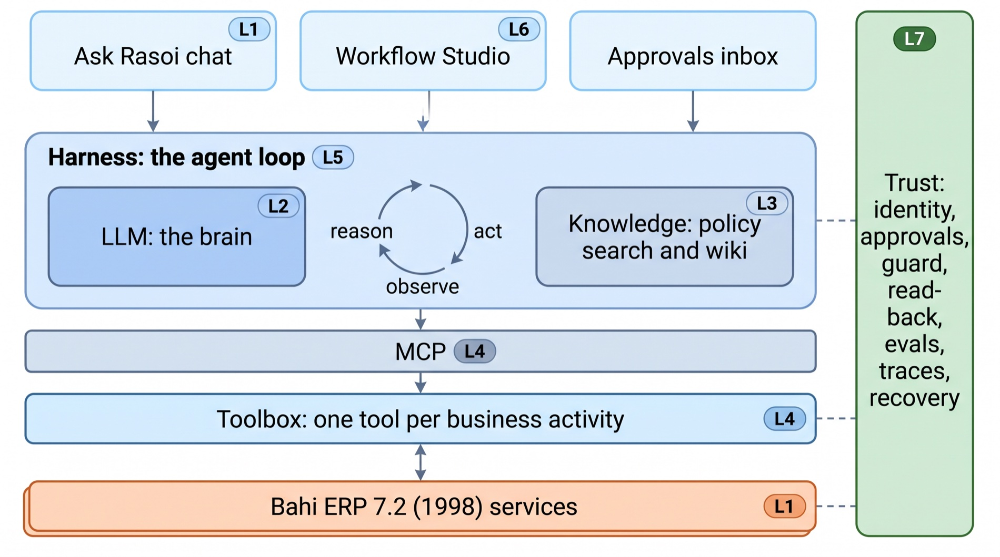
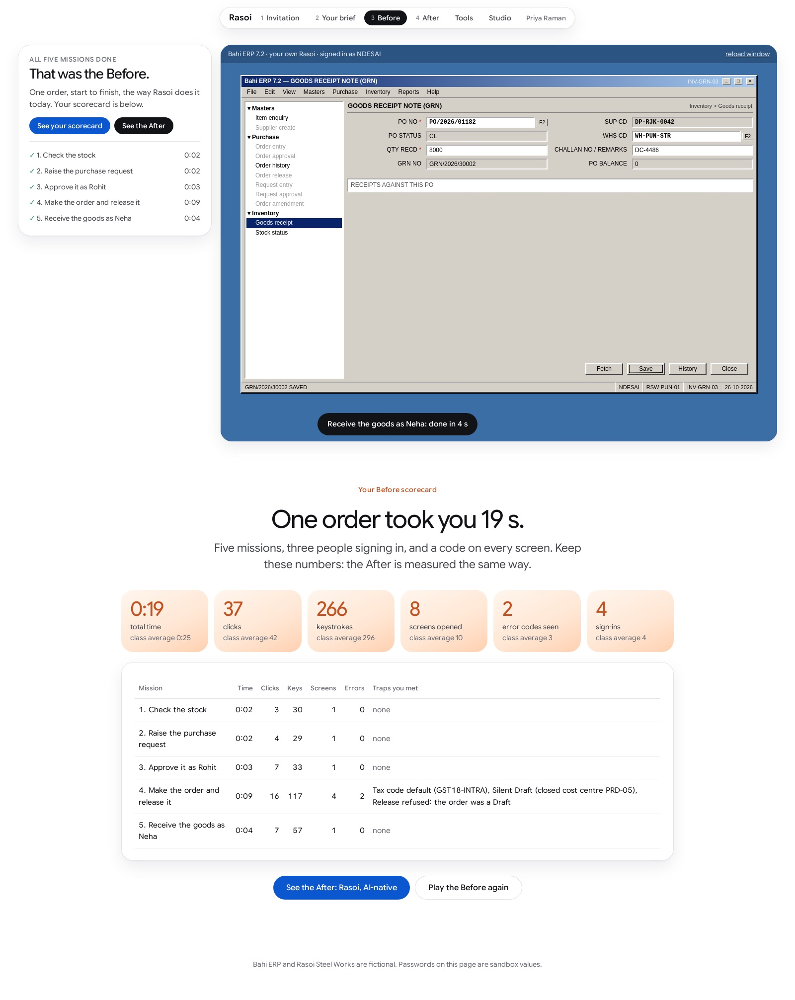
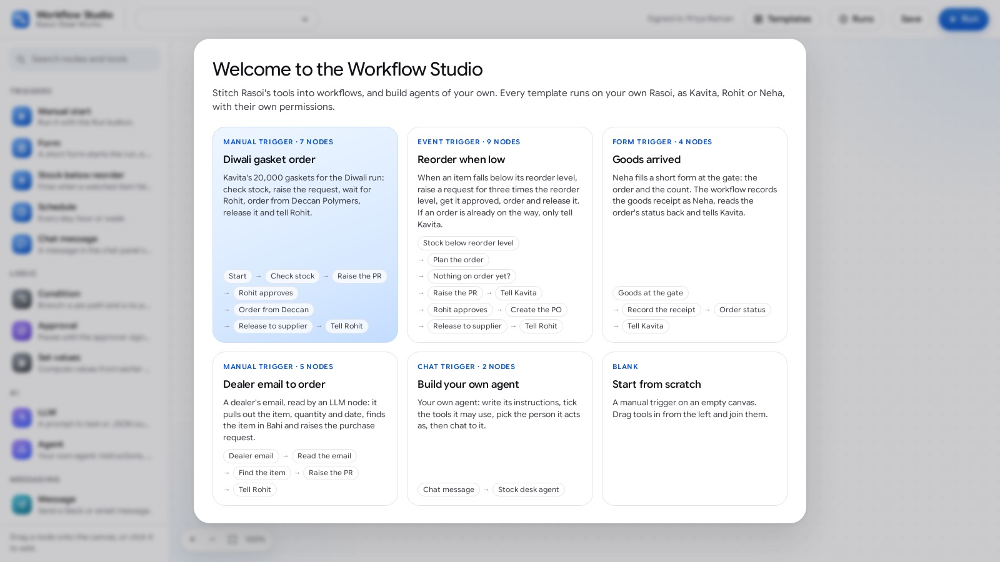
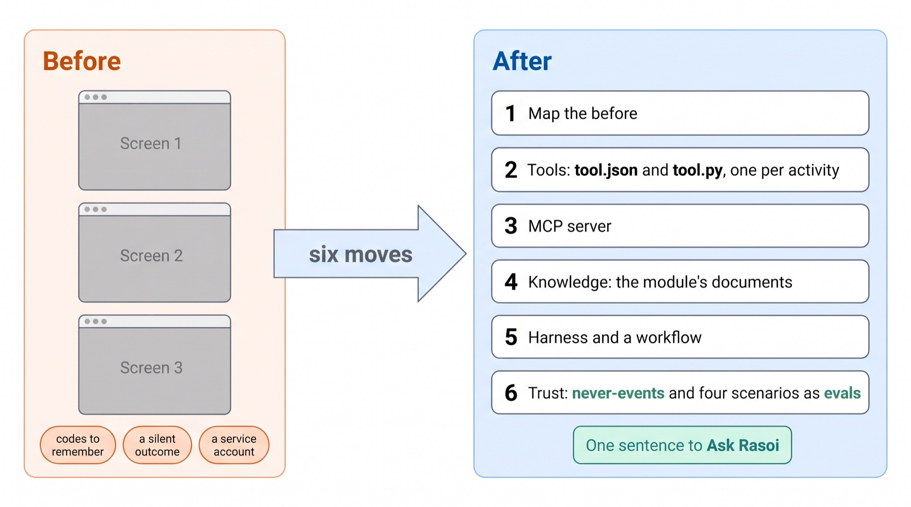
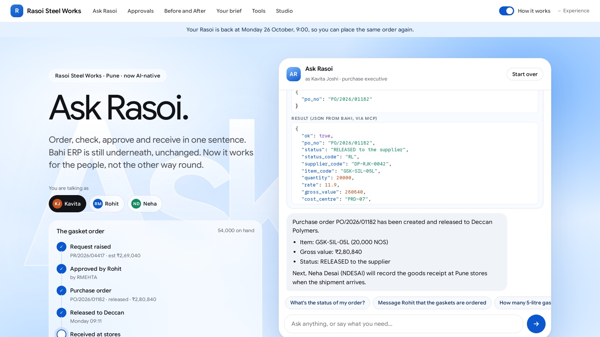
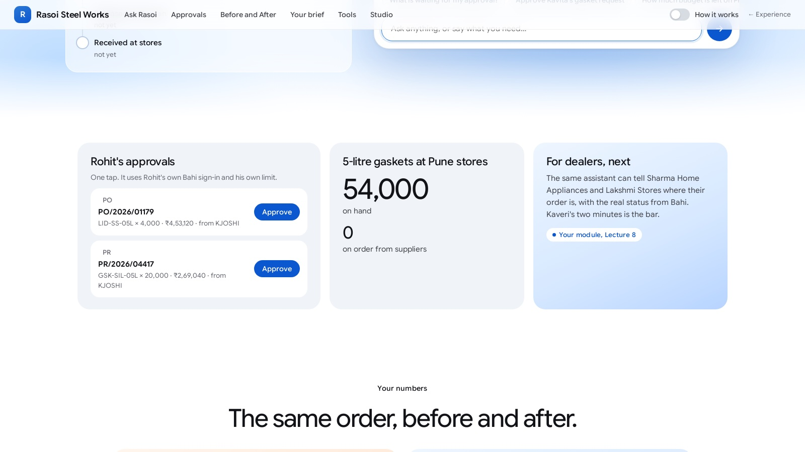

Demo day. The whole build as one figure, Kavita's order through every piece, and then a second Rasoi department made AI-native the same way: yours.
Dr. Rajat Dandekar · Vizuara
Seven lectures built Ask Rasoi for purchasing. Today you take it to another department, live.
Purchasing goes live on Monday. Word got round the plant.
Priya in accounts, Meera in HR, Arjun in sales, Neha at the stores, Farhan at the service desk: each has their own three screens and their own silent "SAVED".
Each of you took one of them in Lecture 1. Today you show it working.
Purchasing works. Kavita has stopped calling IT. Now everyone wants one.
Show me today that this was not a one-off. Take one more department, build it the same way, and run it in front of me.
And I will change one rule on you tonight, the way the real world does. If it still works tomorrow morning, we roll it out.
You will have eight minutes.
Every piece of Ask Rasoi, and the lecture that built it.

Seven lectures, seven pieces, one assistant.
Nothing in the figure is a diagram of an idea. Each box is code in the course repository that ran today.
Bahi ERP 7.2 at the bottom is unchanged since 1998. Everything above it is new.
| Lecture | The piece | In one line | In the code |
|---|---|---|---|
| L1 | The After | One sentence instead of Bahi's screens; the chat everyone uses | bahi/experience/, the live app |
| L2 | The brain | An LLM predicts the next token; it knows nothing about Rasoi | bahi/llm.py |
| L3 | The memory | Search Rasoi's policies and cite the clause | search_policy, bahi/agent/retrieval.py |
| L4 | The hands | One tool per business activity, tool.json + tool.py, over MCP | bahi/toolbox/, toolbox/mcp.py |
| L5 | The loop | Reason, act, observe; the harness; a human approval as a pause | bahi/course/l5/, experience/harness.py |
| L6 | The Studio | Fixed jobs as workflows; agents as nodes; your own agents | bahi/experience/studio/ |
| L7 | Trust | Identity, approvals, guards, read-back, evals, traces, recovery, deploy | bahi/course/l7/, deploy/experience_modal.py |
Our own run: Kavita asks and orders, Rohit approves in his own conversation, Neha receives the goods. One Rasoi.
Scrub. Each tool call is tagged with the lecture whose piece it used.
logs/final_demo.json)The Before, measured in Lecture 1 by doing the five missions carefully on Bahi's legacy screens:
logs/from_other_lectures/L1_before_measure.json)The After: twelve plain messages, three people, each in their own chat. No codes typed by anyone.

bahi/experience/shots/).The model reads the whole conversation as tokens and writes the reply one token at a time.
In Kavita's order it read tokens and wrote .
On its own it would have invented Rasoi's stock figure, as it did in Lecture 2. Every number in this run came from a tool.
Each model call sends the system prompt, the 15 tool schemas and the whole history again. The longest call here read tokens to write a reply of a few lines.
The answer is not in Bahi. It is in the policy documents, and in Suresh's head.
Ask Rasoi searched them and cited the clauses.
Retrieval finds the clause; the model quotes it; the trust layer's NE3 guard would refuse the order even if it did not.
The model wrote a request; our code ran it in Kavita's session over MCP; Bahi's answer went back as JSON.
The stock question used one tool. The order used the same write tool twice: a preview, then a commit after Kavita's yes.
Pune holds 54,000; across Pune and Chakan it is 66,000, 11 days of cover. Say which you mean: the tool does.
Request, then the pause: Ask Rasoi tells Kavita it waits for Rohit and stops.
Rohit, in his own chat: "What is waiting for my approval?" then "Approve PR/2026/04417."
Kavita: "Rohit has approved." The loop continues: order, release. Then Neha: two goods receipts.
| Request | approved by RMEHTA, closed by its order | |
| Order | gross, approved by , status (closed: all received) | |
| Goods receipts | 12,000 and 8,000, recorded by Neha | |
| Stock, Pune | 54,000 + 20,000 |
The reorder does not need a chat every Monday. In the Studio it is a workflow: stock below reorder → request → approval node → order → release → message Rohit.
The same tool folders are its nodes, each acting as a named person. The Studio now runs a module kit's own toolbox too.

bahi/experience/shots/28_studio.png).Bahi's own call log, after the run: the only users who made calls were . No service account.
Every write was read back from Bahi: read-backs across the three conversations. The approval ran only because Rohit was the approver Bahi was waiting for.
Behind it, Lecture 7's numbers: the suite, the gate, and a drill where keys took duplicates from to 0.
| Experience prompt | |
| SVC_AGENT session | |
| Kavita, one-line fix | |
| Kavita + trust layer |
From lectures/L7-trust/experiments/logs/six_flash.json.
1. Kavita asks "how many days will the gaskets last?" Which pieces answer it?
L4's check_stock gets the numbers from Bahi; L2's model writes the sentence; L7's identity makes sure it is Kavita's view of Bahi.
2. Why did Rohit need his own conversation?
Approval is his authority. His chat runs in his session; Kavita's chat could never approve, by design.
3. Neha recorded 12,000 then 8,000. What made the second one close the order?
Bahi did: the receipt tool reports what Bahi holds, CLOSED once all 20,000 arrived.
4. Which piece would you remove first, and what would break?
Any of them breaks something you measured: no memory, no §6.2; no trust, NE1 with SVC_AGENT; no loop, no order after the approval.
The same six moves, on another department.

What we did for purchasing over seven lectures, as six moves you can repeat.
The next plates work each move on HR leave, with real outputs from our run.
Kavita types "I need Thursday and Friday off for my sister's wedding." Before, three screens:
modules/test_kits.log)Two days of CL with one left: Bahi replies LV/2026/00388 SAVED. The status is HD: one day without pay, never sent to Rohit. Nobody hears.
Two Kavitas on the employee roll. A stale 2024 FAQ. Leave Policy §5.2, which Bahi does not check. And SVC_AGENT, which can apply and approve for anyone.
Named the way Kavita talks: check_leave_balance, working_days, apply_leave, leave_status. Not lv_save.
The kit ships the first one. Our reference writes the other three, in the exact format of the purchasing toolbox.
lint_folder() on the four: . Every tool's example passes its own schema.apply_leaveTyped inputs. Errors with a next step. A preview that saves nothing. A key from the content, looked up before the write and after a timeout. A receipt read back from Bahi. Only the session it is given.
The receipt names HD in plain words, so the model cannot call a held leave approved.
bahi/bahi/course/l8/hr_tools.py; NB8 writes it to my_module_tools/apply_leave/tool.py and tests all three promises with code.The four folders plus search_policy, discovered over MCP, bound to Kavita's own session. The same server plugs into Claude Desktop.
The kit's five documents: Leave Policy, Holiday Calendar, Comp-off Rules, the Leave Approval Matrix, and the stale leave-faq-2024.md.
Index them as in Lecture 3, cite clauses, and prefer the current document over the FAQ. The rule only the documents know: Leave Policy §5.2, the plant head for stores and production staff in the Diwali run.
Ask Rasoi over MCP on the four folders, a leave prompt, gemini-3.8-flash, three runs. The kit plays Kavita or Neha and checks Bahi in code.
That is the point of a reference: it shows where your work starts. Click any run.
HR leave has six: approved by the wrong person, two live applications, unpaid days nobody was told about, Diwali-run leave not approved by the plant head, "approved" while held, the wrong employee.
timeout_after_commit on lv_save: one application, not two.Pick a kit: its Before, and the After you build, tool by tool.
The full plan for each is in its README, "The After" (modules/<kit>/README.md).
modules/test_kits.py installs each kit, runs its Before and every trap, its careful and careless scenario runs, and now its tool folders: linted, called as the speaker, listed over MCP.
| Kit | Careful legacy path | Traps | Reference | Naive caught | Starter tool |
|---|---|---|---|---|---|
| Purchasing · amend PO | |||||
| Finance · payables | |||||
| HR · leave | |||||
| Sales · orders | |||||
| Service · warranty | |||||
| Inventory · transfers | |||||
| Travel · claims | |||||
| Legal · contracts |
modules/test_kits.log (copied to logs/test_kits.log), run on Modal today.1. Scenario 2 broke §5.2 every run. Fix the prompt, or the tools?
Both, and a guard. Knowledge finds §5.2; apply_leave needs a forward-to; the guard refuses Diwali-run leave for stores staff that is not forwarded.
2. Why name the tool apply_leave and not lv_save?
The model chooses tools by what people ask for. "Apply for leave" is the activity; lv_save is one of three services behind it.
3. Your kit's write tool times out after Bahi saved. What must happen on the retry?
The key finds the saved document and the tool finishes from there: one document, the right receipt.
4. Which of the six moves can you skip for a read-only module?
None entirely: even reads need identity (who may see what), knowledge, and tests. Only the write promises shrink.
Eight minutes, a rubric out of 100, and one change you did not see coming.
| Time | What | Who |
|---|---|---|
| 7:00–7:30 | This deck, Parts 1–3: the whole build, the recipe, the rules of the morning | Dr. Dandekar |
| 7:30–8:36 | Live modules, 8 minutes each, back to back (up to 8 slots, 64 minutes, plus changeovers) | Students; Dr. Dandekar as the client |
| 8:36–8:55 | Part 4, the final demo: Ask Rasoi live, Kavita's question to Neha's goods receipt | Dr. Dandekar |
| 8:55–9:00 | What comes next; how the recorded demos are graded | Dr. Dandekar |
DEMO_DAY.md.You run your module on the shared Rasoi: the legacy screens first, then Ask Rasoi.
.
.
.
Live or recorded, the grader fills the same sheet from your files and two replays on Modal: your four scenarios and the hidden change test.
A never-event zeroes that scenario. A number that does not match your log scores the lower of the two.
lectures/L8-your-module/rubric.md.A policy lives only in a document; Bahi does not check it. A variant is a path through the screens Bahi supports and your module never took.
On demo day the grader runs a hidden test of the change on your agent, in replay: 10 points.
A demo that works once proves little. Real plants change a rule every month. What the client is buying is not the demo; it is how fast your build absorbs the next change without breaking the rest.
Your gate from Lecture 7 is how you prove "without breaking the rest".
Before announcing, each change is run against its kit with scripted agents: Friday's careful run must fail the hidden test, the careful run after the change must pass, the careless run must be caught.
logs/demo_changes.json)Hidden test: Kavita asks for Thursday 5 and Friday 6 November off. It passes when the days are paid, approved by Anand Patil, and the reply names the rule.
On Saturday night you run the hidden scenario once in auto mode (you know it from CHANGE.md), so your cassette holds the replies. On demo day the grader replays it with no key.
6 points for PASS. 4 for showing where the change now lives, one new case in your suite, and the gate run.
Dr. Dandekar plays whoever owns your module's money. Answer from your logs.
question-bank.md has the general and per-module questions the grader also uses for the recorded demos.| Time | Show |
|---|---|
| 0:00–1:00 | The Before on the real screens, with your counts on screen |
| 1:00–2:30 | The After: the sentence, the one question, the approver in their own session, the read-back |
| 2:30–4:00 | The change: the new rule in your knowledge or tools, the hidden scenario run, its result |
| 4:00–5:00 | The proof: your suite's results, the gate verdict, one drill, opened from the files |
Ask Rasoi, live, end to end.
Open the Experience as Kavita, then Rohit, then Neha. Switch on "How it works" so the room sees every tool card.

bahi/experience/shots/19_after_toolcards.png). If the live run hangs, the same run replays from logs/final_demo.json (plate 8).
In our run, Rohit's first question listed two items waiting for him: an older order for lids and Kavita's request.
He approved one, by number. Ask Rasoi then read the request back from Bahi before answering.
bahi/experience/shots/17_after_inbox.png).From our recorded run of the twelve messages (logs/final_demo.json), gemini-3.8-flash, trust layer on.
, , approved by ;
tokens, s of model time, tool calls
at the course's assumed list prices, ₹88 to the dollar
You built each box in this figure, in seven sessions, on a 1998 ERP that never changed.
Today you added one more department, in the same format, with the same trust.
The course code: github.com/RajatDandekar/agents-for-enterprises.
Eight minutes each. Show us the Before, then the After, then the change. Thank you for building it.